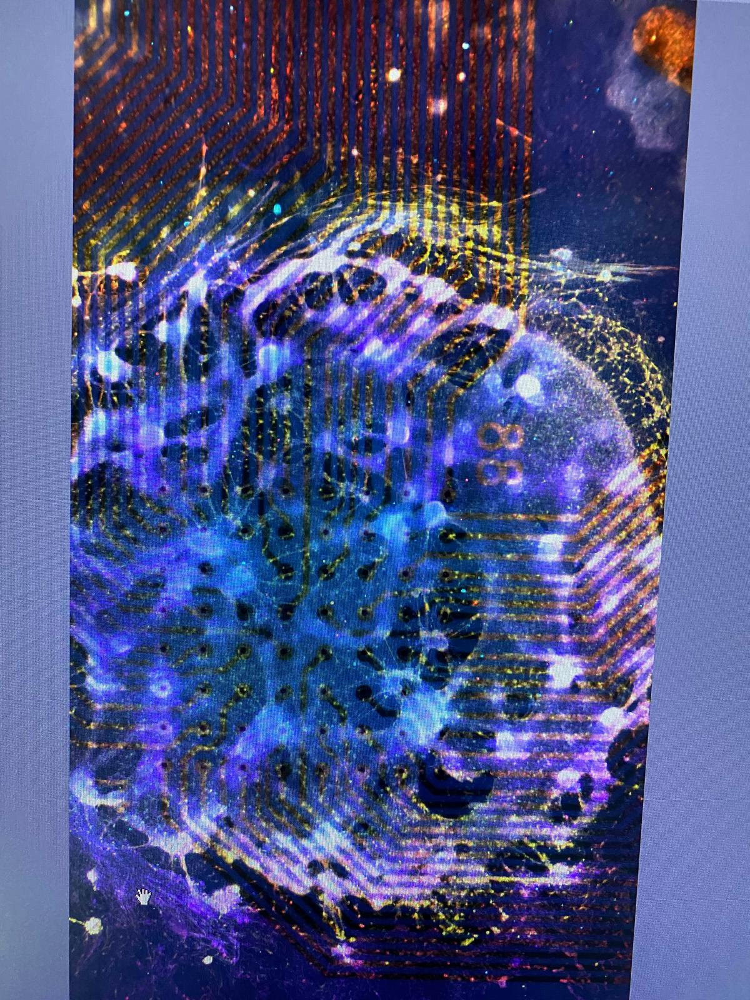

Olfactory neural cultures & odorant responses
German Center for Neurodegenerative Diseases (DZNE), Dresden
Can the electrical activity of olfactory neural cultures reveal reproducible responses to different odorants? My internship explored this question using olfactory bulb and olfactory epithelium cultures, co-culture preparations, and extracellular recordings on microelectrode arrays.
01 / Experimental model
My laboratory contribution
My hands-on work included preparing and coating MEA culture surfaces, maintaining OB/OE cultures and co-cultures on Axion MEA plates, performing media changes and routine microscopy checks on those preparations, and participating in extracellular recordings and odorant-stimulation experiments. I also compared electrophysiological readouts across recording conditions. I also performed endpoint immunofluorescence staining on cultures prepared on Axion MEAs and 3Brain CMOS-MEA chips. I did not carry out routine media changes on the 3Brain chips. Cell isolation and animal dissection were carried out within the wider laboratory workflow and are not presented as procedures I performed independently.
Research question
Could varying the proportions and plating strategies of olfactory bulb (OB) and olfactory epithelium (OE) cells improve culture development and support measurable responses to odorant stimulation?
Culture conditions and seeding strategy
Olfactory bulb (OB) and olfactory epithelium (OE) cells were cultured independently and in co-culture to investigate how cellular composition influenced culture development and electrophysiological activity. In the 24-well MEA experiments, three OB:OE seeding ratios (70:30, 50:50 and 30:70) were investigated at a total of 50,000 cells per well. Pre-mixed and sequential plating strategies were explored, with OB-only and OE-only cultures serving as reference conditions.
| OB : OE ratio | OB cells / well | OE cells / well |
|---|---|---|
| 70 : 30 | 35,000 | 15,000 |
| 50 : 50 | 25,000 | 25,000 |
| 30 : 70 | 15,000 | 35,000 |
Seeding comparison: OB and OE were either mixed before plating or plated sequentially (OE added approximately five minutes after OB).
Additional exploratory experiment — human olfactory epithelium
A separate exploratory preparation incorporated human OE cells into the culture work. These preparations showed cell clumping and agglomerate formation, making culture organization and interpretation difficult. Electrophysiological activity did not yield a clear, reproducible firing pattern from which to draw a firm conclusion. This was an exploratory extension rather than a validated comparison or a main outcome of the rat OB/OE co-culture study.
02 / Stimulation & recordings
MEA electrophysiology
Extracellular neural activity was recorded using Axion BioSystems MEA equipment, with spontaneous activity observed before chemical stimulation.
Odorant exposure
Eugenol and isoamyl acetate were applied to examine changes in spiking and bursting. Different culture configurations and stimulation conditions were compared.
Longitudinal culture monitoring
Electrode coverage and mean impedance were recorded across DIV 8, 12, 16, 20 and 21 in OE-only and mixed OB/OE culture conditions. Routine bright-field microscopy and viability observations accompanied culture maintenance. The original measurements are shown below; their interpretation is discussed in Section 04.


03 / Data & image analysis
MEA signal analysis
I examined spontaneous and post-stimulation recordings using mean firing rate (MFR), mean burst rate (MBR), spike count, inter-spike interval (ISI), inter-burst interval (IBI) and other burst-related measurements. Experimental comparisons included OB-only and mixed cultures exposed to eugenol or isoamyl acetate at selected concentrations and recording intervals.
Culture-associated measurements
Covered electrode counts and mean impedance were compared across days in vitro to characterize changes at the culture–electrode interface. Routine microscopy provided complementary qualitative observations of culture morphology.
Endpoint immunofluorescence and confocal imaging
I used the same endpoint immunofluorescence staining approach for fixed olfactory cultures prepared on Axion MEAs and 3Brain CMOS-MEA chips. The recorded protocol lists OMP, MAP2 and βIV-tubulin primary antibodies (1:500), fluorescent secondary antibodies (1:1000) and Hoechst 33342 (1:2000). The panel supported qualitative visualization of cellular markers and morphology; quantitative marker-expression analysis is not claimed. Antibody and nuclear-stain identities should be checked against the image-channel annotations before assigning individual signals.
The recorded protocol used 4% paraformaldehyde fixation, 0.1% PBST permeabilization, 5% normal goat serum blocking and overnight primary-antibody incubation at 4 °C. Immunofluorescence was performed on fixed endpoint samples, rather than as a longitudinal viability measurement. For the CMOS-MEA preparation, confocal Z-stack imaging and acquisition of adjacent fields enabled visualization of a larger area of the culture.
04 / Results & discussion
Culture development
The co-culture conditions showed higher covered-electrode counts than OE-only cultures at the later recorded time points (Figure 1). Mean impedance also followed different trajectories across conditions (Figure 2). These observations are consistent with differences in the culture–electrode interface, but do not independently establish neuronal survival, synaptic connectivity or an optimal OB:OE ratio. The limited number of independent biological preparations restricts comparative inference; the definitions of the plotted error bars and replicate counts should be confirmed before statistical interpretation.
Electrophysiological responses
Extracellular spiking and bursting were recorded in OB-only and mixed cultures. Exploratory eugenol comparisons included 0.066, 0.33 and 0.5 µM conditions, while isoamyl acetate was also examined in selected recordings. MFR, MBR, ISI and spike-count measurements were compared across baseline and post-addition recording intervals. Responses varied across preparations and conditions; the available dataset did not establish a reproducible odorant-specific activity signature.
Exploratory human OE extension
A separate exploratory extension involving human OE cultures exhibited cell aggregation and poorly organized growth, complicating the interpretation of recorded activity. No reliable conclusion about a characteristic firing response could be drawn from those preparations.
Study limitations
Independent biological replication was insufficient for robust comparisons of culture ratios or odorant responses. Electrode coverage and impedance are indirect measures of culture-associated changes; endpoint immunofluorescence characterizes fixed samples but does not establish longitudinal viability. Future experiments would require matched stimulation controls, predefined analysis criteria and replication across independent preparations.
05 / Experimental media

06 / What I would improve in a follow-up study
Proposed changes for a follow-up study, informed by the limitations of the original experiments. These were not all performed during the internship.
Experimental design
- Compare OB-only, OE-only and mixed-culture ratios using a balanced design across independent preparations, with seeding order recorded prospectively.
- Include vehicle, sham-addition and washout controls, with randomized well allocation and stimulation order, to distinguish compound-associated changes from handling effects.
- Increase independent biological preparations and distribute replicate wells across culture conditions. Continue matched-DIV morphology and viability checks; if marker changes over time are a study aim, fix separate cultures at predefined DIV for endpoint imaging. [2] [3]
Electrophysiological analysis
- Prespecify spike- and burst-detection settings, electrode inclusion criteria and recording windows; archive raw data and analysis settings for reproducibility. [1]
- Evaluate baseline-to-stimulation changes in MFR, MBR, spike count and ISI alongside vehicle and washout recordings; compare both absolute and within-well changes. [1]
- Report the number of independent preparations and wells, define error bars and confidence intervals, and avoid treating electrodes within one well as independent biological replicates.
- For endpoint microscopy, use consistent acquisition settings, scale bars, appropriate staining controls and predefined image-analysis criteria. If changes across DIV are of interest, allocate independent cultures for fixation at each time point. [2] [3]
07 / References
- Cotterill et al. (2016), Characterization of Early Cortical Neural Network Development in Multiwell Microelectrode Array Plates
- Isolation and Differentiation of Neurons and Glial Cells from Olfactory Epithelium in Living Subjects (2023)
- Technique of flat-mount immunostaining for mapping the olfactory epithelium and counting olfactory sensory neurons (2023)